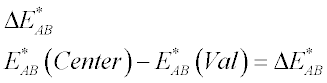

This topic presents a glossary of terms for the CIE analysis feature in ASAP.
Reference: “Out of Gamut: Color-Correct Vocabulary”, Bruce Fraser, http://www.creativepro.com.
Chromaticity Values: Amounts of the three primaries required to match a color sample. When specifying tristimulus values, the observer and standard illuminant must also be specified.
CIE: International Commission on Illumination, an international standards organization responsible for setting standards for color and color measurement. Some of these standards are reflected in the following CIE color definitions.
CIELAB: (CIE L* a* b*: A mathematical derivative of CIE XYZ that describes colors using three synthetic primaries: L* (Lightness), a* (red-greenness), and b* (yellow-blueness). CIE XYZ (1931) is the first of a series of mathematical models produced by the CIE that describe color in terms of synthetic primaries based on human perception. The model is the following formula:

CMF: Color Matching Function
Gamut: Gamut is the color range that the display device can represent. The gamut of possible colors for a display device is defined by a Maxwell triangle in a CIE Chromaticity Chart. The corners of such a Maxwell triangle in a CIE Chromaticity Chart are determined by the chromaticity coordinates of the Red-Green-Blue phosphors used in the monitor.
Observer White Point (Illuminant): Spectral data sets that describe the spectral components of the light source. Used in conjunction with tristimulus values such as XYZ or Lab to define a color.
Standard Observer Model (SOM): A hypothetical observer model that represents "normal" human color vision, defined in terms of the eye's color-matching functions. The CIE defines two such standard observer models, the 2-degree observer and the 10-degree observer, because color vision is most acute in the center of the visual field.
xy Chromaticity Diagram: A two-dimensional graph (for example, the ASAP Display Viewer) of chromaticity coordinates that shows the location of a color on a plane of constant lightness.